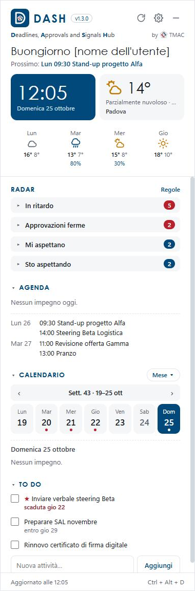
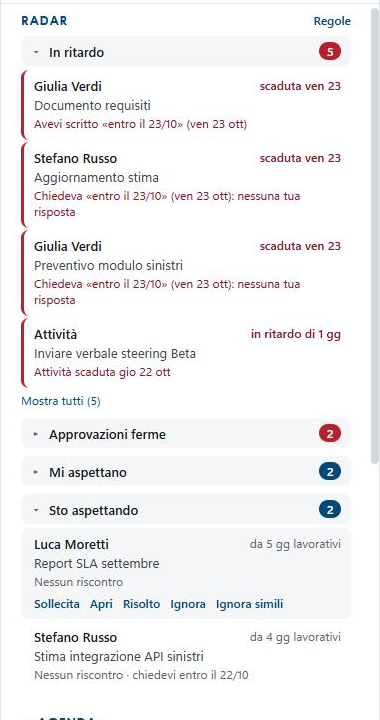
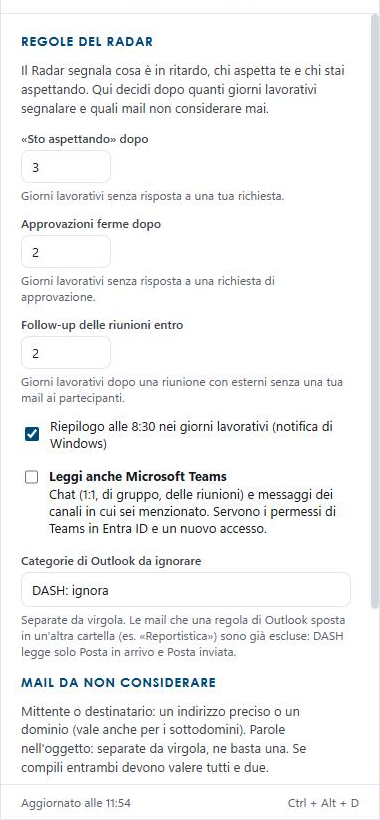
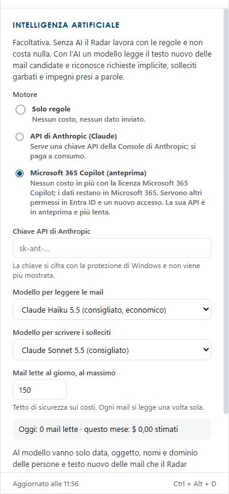
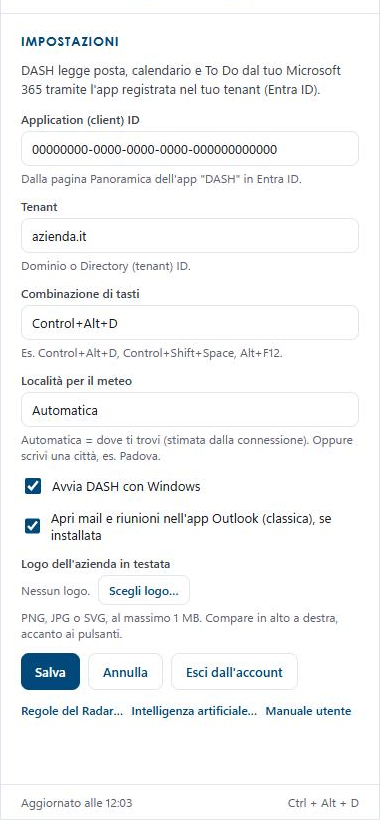
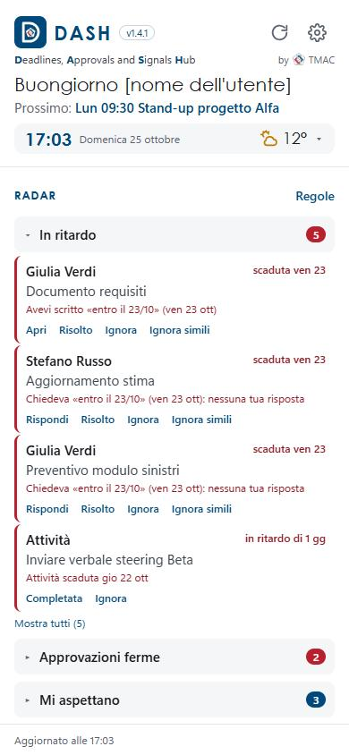

DASH
Deadlines, Approvals and Signals Hub
Manuale utente · versione 1.6.3
Installazione, primo accesso e uso quotidiano

by TMAC
Indice
- Che cos'è DASH
- Cosa serve
- Installazione
- Primo avvio e accesso
- La finestra di DASH
- Il Radar
- Regole del Radar
- Microsoft Teams
- Intelligenza artificiale
- Impostazioni
- DASH sull'iPhone
- DASH sul Mac
- DASH su Android
- Riservatezza dei dati
- Problemi frequenti
- Aggiornare e disinstallare
- Appendice per l'amministratore Microsoft 365
1. Che cos'è DASH
DASH è un piccolo pannello che sta sul desktop di Windows e ti aiuta a non perdere nulla del lavoro di ogni giorno. Legge la tua posta, il tuo calendario, i tuoi To Do e, se vuoi, le tue chat di Teams e ti mostra in un colpo d'occhio:
- In ritardo: impegni scaduti, richieste a cui non hai risposto entro la data chiesta, riunioni con esterni senza un seguito;
- Approvazioni ferme: approvazioni chieste a te o da te che aspettano da troppi giorni;
- Mi aspettano: persone che aspettano una tua risposta;
- Sto aspettando: tue richieste che non hanno ancora avuto riscontro.
Non devi inserire nulla: DASH lavora sui dati che hai già in Microsoft 365. Non sostituisce Outlook, Teams o gli strumenti di progetto: li affianca.
2. Cosa serve
- Un PC con Windows 10 o 11 oppure un Mac con processore Apple (M1 o successivi; capitolo 12) e, se vuoi, un iPhone o un telefono Android (capitolo 13).
- Un account Microsoft 365 della tua organizzazione (posta e calendario di Outlook).
- Il file di installazione
DASH-Setup-1.6.3.exe.
- Il Client ID e il Tenant di DASH per la tua organizzazione: te li comunica l'amministratore Microsoft 365 (vedi Appendice).
- Facoltativo, per l'intelligenza artificiale: la licenza Microsoft 365 Copilot oppure una chiave delle API di Anthropic (vedi capitolo 9).
3. Installazione
- Fai doppio clic su
DASH-Setup-1.6.3.exe.
- Se Windows mostra «Windows ha protetto il PC» (SmartScreen), clicca Ulteriori informazioni e poi Esegui comunque. L'avviso compare perché il programma non è ancora firmato digitalmente: procedi solo se hai ricevuto il file da una fonte di cui ti fidi.
- Scegli se installare solo per te (consigliato) e la cartella, poi Installa. Non servono diritti di amministratore.
- Al termine DASH si avvia da solo. Trovi l'icona sul desktop e nel menu Start.
DASH si avvia da solo all'accensione del PC. Puoi cambiarlo in Impostazioni › «Avvia DASH con Windows».
4. Primo avvio e accesso
- Al primo avvio DASH apre le Impostazioni. Inserisci l'Application (client) ID e il Tenant che ti ha comunicato l'amministratore Microsoft 365 della tua organizzazione (il Tenant può essere il dominio, es.
azienda.it, o l'ID directory). Clicca Salva.
- DASH mostra Collega Microsoft 365. Clicca Accedi.
- Si apre il browser con la pagina di accesso Microsoft: entra con il tuo account di lavoro.
- Se Microsoft chiede di accettare le autorizzazioni di «DASH» (leggere posta, calendario e attività), accetta. Se compare «È necessaria l'approvazione dell'amministratore», contatta chi gestisce Microsoft 365 nella tua organizzazione (vedi Appendice).
- Torna su DASH: dopo pochi secondi compaiono saluto, agenda e Radar.
DASH usa il Microsoft 365 della tua organizzazione: i tuoi dati restano tra il tuo PC e il vostro tenant. Client ID e Tenant si cambiano in qualunque momento in Impostazioni (capitolo 10).
5. La finestra di DASH

In alto: l'icona, il nome DASH con la versione e, se impostato, il logo della tua azienda. A destra tre pulsanti:
- ↻ aggiorna subito (DASH aggiorna comunque da solo ogni 5 minuti);
- ⚙ apre le Impostazioni;
- – rimette DASH sul desktop, sotto le altre finestre.
Sotto: saluto, prossimo impegno, orologio e meteo.
Poi il Radar (capitolo 6) e, più in basso, Agenda (impegni di oggi e dei prossimi giorni, con «Partecipa» per le riunioni Teams), Calendario (settimana o mese) e To Do (spunta per completare, «▸ nota» per leggere la nota dell'attività, campo per aggiungerne una).
Ogni sezione si apre e chiude cliccando sul titolo; DASH ricorda le tue scelte.
Mostrare e nascondere DASH
DASH si comporta come un widget: sta sul desktop e, quando clicchi su un'altra finestra, scende sotto le altre app. Non si è chiuso: per richiamarlo in primo piano usa la combinazione Ctrl + Alt + D, oppure un clic sull'icona di DASH nell'area di notifica (accanto all'orologio di Windows), oppure mostra il desktop (Win + D).
Il tasto destro sull'icona nell'area di notifica apre un menu con Aggiorna ora, Impostazioni, Avvia con Windows, Ripristina posizione, Esci dall'account e Chiudi DASH.
6. Il Radar

Il Radar ha quattro blocchi, chiusi all'avvio: il numero accanto al titolo dice quanti segnali ci sono (rosso per «In ritardo» e «Approvazioni ferme»). Clicca il titolo per aprirli.
Ogni segnale mostra chi, l'oggetto, da quanti giorni lavorativi aspetta (sabato, domenica e festività italiane non contano) e una riga di spiegazione. Il bordo rosso indica ciò che è urgente o scaduto.
Clic su un segnale per aprirlo: compaiono l'oggetto per intero e il testo (le prime righe della mail o del messaggio Teams, oppure la nota dell'attività di To Do). Un altro clic lo richiude; per leggere tutto usa Apri.
Contrassegni: Teams (viola) se il segnale viene da una chat di Teams; AI se è stato letto dall'intelligenza artificiale.
Le azioni su un segnale
Passa il mouse su un segnale per vedere le azioni:
| Azione | Cosa fa |
|---|
| Rispondi / Apri | Apre la mail o la riunione nell'app Outlook (o la chat nell'app Teams). Se l'app non c'è, apre la versione web. |
| Leggi | Apre il segnale per intero in una finestra più grande: chi, oggetto, la sintesi e tutto il testo nuovo della mail o del messaggio. «Torna al Radar» la richiude. |
| Sposta in… | Mette il segnale in un altro gruppo della vista «Per interlocutore» (vedi sotto). La scelta vale anche per i segnali che arriveranno. |
| Sollecita | Prepara il testo di un sollecito cortese, che puoi modificare. «Copia e apri in Outlook» lo copia e apre la mail: incollalo nella risposta. Con l'AI attiva c'è anche «Riscrivi con l'AI». |
| Risolto | La cosa è fatta (anche a voce o al telefono): il segnale sparisce. |
| Ignora | Il segnale non è rilevante: sparisce. |
| Ignora simili | Crea una regola: d'ora in poi le mail con lo stesso mittente o destinatario e un oggetto simile non entrano nel Radar (es. la reportistica settimanale di un cliente). |
| Completata | Solo per le attività di To Do: la segna come completata. |
I segnali nascosti con Risolto o Ignora tornano visibili se nella stessa conversazione arriva qualcosa di nuovo. Puoi farli ricomparire tutti in Regole del Radar › «Rimostrali».
Riepilogo del mattino
Alle 8:30 dei giorni lavorativi DASH manda una notifica, che resta sullo schermo finché non la chiudi, e mette in cima al Radar il riquadro «Il Radar di oggi»: le cose in sospeso del mattino, divise per blocco («In ritardo» e «Approvazioni ferme» aperti, gli altri con un clic). Durante la giornata il riquadro si aggiorna: ciò che chiudi resta barrato con ✓, ciò che arriva dopo compare con l'etichetta «nuova» e in alto vedi quante cose hai fatto («3 di 9 fatte»). Un clic su una voce la apre; un clic sul titolo riduce il riquadro a una riga e lo riapre. Il riepilogo si spegne in Regole del Radar.
Il Radar per interlocutore
In cima al Radar scegli «Per tipo» (i quattro blocchi) o «Per interlocutore». Nella seconda vista DASH raggruppa da solo i segnali: per azienda chi scrive da fuori (dal dominio della mail: boggi.it diventa «Boggi»), per persona i colleghi e chi usa caselle personali. Ogni gruppo dice cosa c'è in sospeso, per esempio «Boggi · 2 aspettano te · 1 in ritardo».
Non serve configurare nulla. Se un gruppo è sbagliato, apri il segnale e usa Sposta in…: scrivi il nome del gruppo (anche nuovo, per esempio «Amministrazione») e scegli se vale solo per quella persona o per tutta la sua azienda. Gruppo automatico torna alla proposta di DASH. Le scelte si sincronizzano con gli altri dispositivi.
Pronto per la riunione
Nell'Agenda, accanto alle riunioni con altre persone, c'è Prepara. Apre una scheda da leggere in un minuto: le cose in sospeso con i partecipanti (anche con i loro colleghi della stessa azienda) e gli ultimi scambi delle due settimane, ognuno apribile con un clic. Con l'intelligenza artificiale attiva, in cima compaiono anche 3 righe di sintesi: all'AI vanno solo oggetti e dettagli, mai il testo delle mail.
15 minuti prima della riunione arriva una notifica: cliccala per aprire la scheda. Il promemoria si spegne in Regole del Radar.
7. Regole del Radar

Si aprono con Regole, in alto a destra nel Radar.
- «Sto aspettando» dopo: quanti giorni lavorativi senza risposta prima di segnalare una tua richiesta (3 di base).
- Approvazioni ferme dopo: lo stesso per le approvazioni (2).
- Follow-up delle riunioni entro: giorni dopo una riunione con persone esterne senza una tua mail ai partecipanti (2).
- Riepilogo alle 8:30: accende o spegne la notifica del mattino.
- Promemoria 15 minuti prima delle riunioni: accende o spegne la notifica di «Pronto per la riunione».
- Leggi anche Microsoft Teams: vedi capitolo 8.
- Categorie di Outlook da ignorare: le mail con queste categorie non entrano nel Radar (di base «DASH: ignora»).
Mail da non considerare
Ogni regola ha due campi; se li compili entrambi devono valere tutti e due:
- Da/a: un indirizzo preciso (
nome@cliente.it) o un dominio (cliente.it, vale anche per i sottodomini);
- Oggetto: una o più parole separate da virgola; ne basta una.
Esempio: Da/a cliente.it e Oggetto report, estrazione settimanale esclude la reportistica di quel cliente, ma non le sue altre mail.
Anche una regola di Outlook funziona: DASH legge solo Posta in arrivo e Posta inviata, quindi le mail spostate automaticamente in un'altra cartella (es. «Reportistica») sono già fuori dal Radar.
In fondo al pannello, Escluse nell'ultimo aggiornamento (clicca per aprire) elenca le mail scartate e il motivo: utile per controllare che le regole facciano ciò che vuoi. Ricordati di cliccare Salva.
8. Microsoft Teams
Con Leggi anche Microsoft Teams acceso (Regole del Radar), DASH considera anche:
- le chat 1:1: se l'ultimo messaggio è dell'altra persona e ti chiede qualcosa → «Mi aspettano»; se è tuo con una domanda senza risposta da alcuni giorni → «Sto aspettando»;
- le chat di gruppo e delle riunioni: solo i messaggi che ti menzionano (@) o iniziano con il tuo nome;
- i canali dei team: i messaggi in cui sei menzionato, finché non hai scritto nel filo.
La prima volta DASH può chiederti di accedere di nuovo: Microsoft deve confermare i permessi di Teams. Se Teams non è leggibile, sotto il titolo del Radar compare una riga rossa «Teams non leggibile» con il motivo.
9. Intelligenza artificiale

È facoltativa: senza AI il Radar funziona con le regole e non costa nulla. Con l'AI un modello legge il testo delle mail e dei messaggi candidati e riconosce richieste implicite, solleciti garbati e impegni presi a parole; scrive anche i solleciti.
Si apre da Impostazioni › Intelligenza artificiale… Scegli il Motore:
- Solo regole: nessun costo, nessun dato inviato;
- Microsoft 365 Copilot: nessun costo in più se hai la licenza Microsoft 365 Copilot; i dati restano in Microsoft 365. Dopo il salvataggio DASH può chiederti di accedere di nuovo. Clicca Prova Copilot per verificare;
- API di Anthropic (Claude): serve una chiave della Console di Anthropic, a consumo. Incolla la chiave, Salva e Prova la chiave. Fissa un tetto di spesa nella Console.
Mail lette al giorno, al massimo è un limite di sicurezza (150 di base); ogni mail si legge una volta sola. Il riquadro sotto mostra quante mail sono state lette oggi e, per Anthropic, il costo stimato del mese.
10. Impostazioni

- Lingua di DASH: Automatica (quella di Windows, del Mac o del telefono), oppure Italiano, English, Deutsch, Français. Cambia subito pulsanti, testi dei segnali e date; anche Manuale utente apre questo documento nella lingua scelta. I testi scritti dall'AI, i solleciti e le notifiche restano in italiano.
- Application (client) ID e Tenant: quelli della tua organizzazione, inseriti al primo avvio; cambiali solo se te lo chiede l'amministratore.
- Combinazione di tasti per richiamare DASH (di base Control+Alt+D).
- Località per il meteo: «Automatica» o una città.
- Avvia DASH con Windows.
- Apri mail e riunioni nell'app Outlook: se spento, si apre sempre la versione web.
- Sincronizza con gli altri dispositivi (PC e telefono): vedi sotto.
- Logo dell'azienda in testata: «Scegli logo…» (PNG, JPG o SVG fino a 1 MB), «Togli logo».
- In fondo: Regole del Radar…, Intelligenza artificiale…, Manuale utente (apre questo documento), Esci dall'account.
Sincronizzare PC e telefono
Se usi DASH su più dispositivi (per esempio il PC e l'iPhone), accendi Sincronizza con gli altri dispositivi su ciascuno di essi. Da quel momento condividono:
- le Regole del Radar (giorni, categorie escluse, regole, «Ignora simili», Teams, riepilogo) e la scelta dell'intelligenza artificiale;
- i segnali segnati Risolto o Ignora, e «Ripristina»;
- le mail da non considerare;
- le analisi dell'AI: una mail letta da Copilot su un dispositivo non si rilegge sull'altro.
Restano su ciascun dispositivo: Client ID e Tenant, la lingua, la chiave di Anthropic, la combinazione di tasti, l'avvio con Windows, il logo e i costi dell'AI. La sincronizzazione avviene a ogni aggiornamento e pochi secondi dopo ogni tua azione; sotto la casella compare l'ora dell'ultima sincronizzazione. Se due dispositivi cambiano le Regole quasi insieme, vale l'ultima modifica.
I dati stanno in un file in una cartella riservata a DASH nel tuo OneDrive (App › DASH): non spostarla né modificarla. La prima volta DASH può chiederti di accedere di nuovo, perché Microsoft deve confermare il permesso per quella cartella.
11. DASH sull'iPhone

Sull'iPhone DASH ha la stessa interfaccia e lo stesso Radar del PC: stessi segnali, stesse azioni, stesse regole e la stessa intelligenza artificiale. Al primo avvio si inseriscono gli stessi Application (client) ID e Tenant del PC, poi Accedi.
Cosa cambia rispetto al PC:
- Testata compatta: ora, data e temperatura stanno in una riga. Tocca la riga per aprire o chiudere le previsioni dei prossimi giorni; DASH ricorda la scelta.
- Azioni sempre visibili sotto ogni segnale (Apri, Risolto, Ignora, Ignora simili), perché sul telefono non c'è il passaggio del mouse.
- Aggiornamento: ogni 5 minuti mentre l'app è aperta, e subito quando ci torni. Con l'app chiusa iOS non lascia leggere la posta: aprendola dopo molte ore, l'AI impiega un paio di minuti a leggere le mail nuove.
- Riepilogo del mattino: arriva come notifica alle 8:30 dei giorni lavorativi, con i dati dell'ultima volta che hai aperto DASH. Aprendo l'app dopo le 8:30 trovi anche il riquadro «Il Radar di oggi» in cima al Radar, come sul PC. Consenti le notifiche al primo avvio.
- Apri porta all'app Outlook o Teams dell'iPhone, se installate, altrimenti a Safari.
- Schermo grande: sull'iPhone Duo aperto, sull'iPad o con il telefono in orizzontale DASH si divide in due colonne, a sinistra il Radar e a destra Agenda, Calendario e To Do. Da chiuso o in verticale torna da solo a una colonna.
- Non ci sono la combinazione di tasti, l'avvio con Windows, la scelta dell'Outlook classico e il logo dell'azienda.
Per avere sul telefono le stesse regole, gli stessi segnali nascosti e le analisi dell'AI del PC, accendi Sincronizza con gli altri dispositivi su entrambi (capitolo 10).
Installazione con TestFlight
Per ora DASH per iPhone e iPad non è sull'App Store: si installa con TestFlight, l'app di Apple per le versioni in prova.
- Dall'App Store installa l'app gratuita TestFlight.
- Apri l'invito che ricevi per mail («DASH by TMAC») e tocca Visualizza in TestFlight, oppure apri il link che ti è stato dato.
- In TestFlight tocca Installa. ✅ Sulla schermata Home compare DASH.
- Al primo avvio inserisci Client ID e Tenant, poi Accedi (capitolo 4).
Le versioni nuove arrivano da TestFlight, che avvisa con una notifica; si aggiornano con Aggiorna. Ogni versione resta valida 90 giorni: prima della scadenza ne arriva sempre una nuova. Impostazioni e regole restano.
12. DASH sul Mac
Sul Mac DASH è lo stesso programma del PC: stesso pannello, stesso Radar, stesse regole, stessa intelligenza artificiale e stessa sincronizzazione. Serve un Mac con processore Apple (M1 o successivi): sui Mac con processore Intel questa versione non si apre.
Installazione e primo avvio
- Fai doppio clic sul file
DASH-1.6.3-mac.dmg.
- Nella finestra che compare, trascina l'icona di DASH sulla cartella Applicazioni. Poi chiudi la finestra ed espelli il disco «DASH» (tasto destro › Espelli).
- Apri Applicazioni e fai doppio clic su DASH.
- Se macOS dice che non può aprirlo perché lo sviluppatore non è verificato: vai in Impostazioni di Sistema › Privacy e sicurezza, scorri in basso fino a «DASH è stato bloccato…», premi Apri comunque e conferma con la password del Mac. Succede solo la prima volta.
- In alto a destra, nella barra dei menu, compare la D di DASH e si apre il pannello. Se chiede di inviare notifiche, scegli Consenti: servono per il riepilogo delle 8:30.
- Inserisci Application (client) ID e Tenant, gli stessi del PC, poi Salva e Accedi (capitolo 4).
- Se compare «DASH vuole usare le informazioni del portachiavi», scrivi la password del Mac e scegli Consenti sempre: lì DASH tiene la sessione, cifrata.
Per avere sul Mac le stesse regole, gli stessi segnali nascosti e le analisi dell'AI del PC e dell'iPhone, accendi Sincronizza con gli altri dispositivi (capitolo 10).
Cosa cambia rispetto al PC
- L'icona di DASH sta nella barra dei menu in alto a destra, non nel Dock. Un clic sull'icona mostra o nasconde il pannello; con il tasto destro (o due dita) si apre il menu, con Chiudi DASH.
- La combinazione di tasti per richiamarlo è ⌃ ⌥ D (Control + Option + D). Si cambia in Impostazioni, per esempio con
Command+Shift+D.
- Rimetti sul desktop nasconde DASH, che torna con i tasti o con un clic sull'icona nella barra dei menu.
- Apri porta a Outlook sul web: l'Outlook classico di Windows sul Mac non c'è.
- Al posto di «Avvia con Windows» c'è Apri DASH all'accesso al Mac, in Impostazioni.
- Il riepilogo del mattino arriva come notifica del Mac.
13. DASH su Android
Sui telefoni Android DASH è la stessa app dell'iPhone: stessa interfaccia, stesso Radar, stesse azioni, stesse regole, stessa intelligenza artificiale e stessa sincronizzazione. Vale quindi tutto il capitolo 11, comprese le due colonne con il telefono in orizzontale o sui pieghevoli aperti. Serve Android 7 o successivo.
Installazione
Per ora DASH per Android non è sul Play Store: si installa dal file DASH-1.6.3-android.apk, che ricevi per mail, OneDrive o Teams.
- Apri il file dal telefono (tocca l'allegato o il file in OneDrive).
- Android chiede di consentire l'installazione da quell'app (per esempio Outlook o il browser): tocca Impostazioni, accendi Consenti da questa fonte e torna indietro.
- Tocca Installa. Se Google Play Protect avvisa che l'app è sconosciuta, tocca Altri dettagli › Installa comunque.
- Apri DASH. Inserisci Application (client) ID e Tenant, gli stessi del PC, poi Salva e Accedi.
- Se chiede di inviare notifiche, tocca Consenti: servono per il riepilogo delle 8:30.
Per aggiornare DASH installa il nuovo file .apk sopra quello vecchio: impostazioni, regole e accesso restano.
Cosa cambia rispetto all'iPhone
- Apri porta all'app Outlook o Teams di Android, se installate, altrimenti al browser.
- La sessione e la chiave di Anthropic sono cifrate nell'archivio protetto di Android invece che nel portachiavi di iOS.
- Il Client ID e il Tenant sono gli stessi; in Entra ID l'amministratore aggiunge la piattaforma Android (Appendice).
14. Riservatezza dei dati
- DASH funziona sul tuo PC o sul tuo Mac e sul tuo telefono (iPhone o Android): non c'è un server di TMAC in mezzo. Legge solo la tua casella, con i tuoi permessi. Nessun altro, nemmeno TMAC, vede i tuoi segnali.
- TMAC non riceve e non vede i tuoi dati. L'intelligenza artificiale che DASH usa è quella della tua organizzazione: la sua licenza Microsoft 365 Copilot o la sua chiave di Anthropic, con i suoi contratti. TMAC fornisce solo il programma.
- Con la sincronizzazione accesa, impostazioni, segnali nascosti e segnali estratti dall'AI si copiano anche nella cartella di DASH del tuo OneDrive: restano nel Microsoft 365 della tua organizzazione, mai presso TMAC.
- Sul PC DASH conserva le impostazioni, i segnali nascosti e, con l'AI, i soli segnali estratti (non i testi delle mail). La sessione Microsoft e la chiave di Anthropic sono cifrate con la protezione di Windows.
- Con l'AI attiva, al modello vanno solo data, oggetto, nomi, dominio e testo nuovo delle mail e dei messaggi che il Radar valuta: mai indirizzi completi, allegati, mail escluse dalle regole o automatiche.
- Copilot: i dati restano nel perimetro di Microsoft 365 della tua organizzazione, secondo i suoi impegni contrattuali (tra cui il non addestramento dei modelli sui dati dei clienti).
- API di Anthropic: con il contratto commerciale i dati, per impostazione, non sono usati per addestrare i modelli; l'elaborazione avviene fuori dall'UE. Usala solo se la tua organizzazione l'ha approvata.
Le garanzie legali (accordo sul trattamento dei dati, trasferimenti fuori UE, informativa) dipendono dai contratti con Microsoft e Anthropic e dalle verifiche del referente privacy della tua organizzazione: questo manuale descrive come funziona DASH, non sostituisce quelle verifiche.
15. Problemi frequenti
| Cosa vedi | Cosa fare |
|---|
| DASH «è sparito» o sembra chiuso | È sotto le altre finestre: Ctrl + Alt + D o clic sull'icona nell'area di notifica. Se l'icona non c'è, avvialo dal menu Start. |
| «Sessione scaduta: accedi di nuovo» | Clicca Accedi e rientra con il tuo account. Succede dopo un cambio di password o di permessi. |
| «La combinazione … è già usata da un altro programma» | Scegli un'altra combinazione in Impostazioni (es. Control+Alt+Shift+D). |
| «È necessaria l'approvazione dell'amministratore» all'accesso | L'amministratore Microsoft 365 deve concedere il consenso all'app DASH (Appendice). |
| «Teams non leggibile» nel Radar | Mancano i permessi di Teams: avvisa l'amministratore. Puoi spegnere Teams nelle Regole. |
| «AI: errore» in alto nel Radar | Passa il mouse per leggere il motivo. Copilot: serve la licenza Microsoft 365 Copilot e i permessi; Anthropic: chiave non valida o credito esaurito. |
| Sotto «Sincronizza…»: «OneDrive non consente l'accesso» | Manca il permesso Files.ReadWrite.AppFolder: avvisa l'amministratore (Appendice), poi esci e accedi di nuovo. |
| Un segnale sbagliato che torna sempre | Usa Ignora simili, oppure una regola o una categoria di Outlook. |
| Manca un segnale che ti aspettavi | Controlla «Escluse nell'ultimo aggiornamento» nelle Regole; ricorda che DASH guarda le ultime due settimane e solo Posta in arrivo e Posta inviata. |
16. Aggiornare e disinstallare
- Aggiornare: chiudi DASH (tasto destro sull'icona › Chiudi DASH) e installa la nuova versione sopra la precedente. Impostazioni, regole e accesso restano.
- Disinstallare: Impostazioni di Windows › App › App installate › DASH › Disinstalla. Le impostazioni restano nella cartella
%APPDATA%\DASH: cancellala se vuoi eliminare tutto.
17. Appendice per l'amministratore Microsoft 365
DASH usa una registrazione app in Entra ID con permessi delegati: ogni persona vede solo la propria casella, e i dati passano solo tra il PC e il Microsoft 365 della vostra organizzazione (TMAC non riceve nulla). Ogni organizzazione usa il proprio tenant e, per l'intelligenza artificiale, la propria licenza Copilot o chiave di Anthropic.
Una sola volta per tutta l'organizzazione, l'amministratore registra DASH nel vostro tenant come segue e comunica agli utenti Client ID e Tenant (o il nome di dominio), da inserire al primo avvio.
Registrazione app (5 minuti)
https://entra.microsoft.com › Identità › Applicazioni › Registrazioni app › Nuova registrazione.- Nome: DASH. Tipo di account: Solo gli account in questa directory organizzativa.
- URI di reindirizzamento: piattaforma Client pubblico/nativo (dispositivi mobili e desktop), valore
http://localhost. Registra.
- In Autenticazione: «Consenti flussi client pubblici» = Sì. Nessun segreto client: non serve.
- In Panoramica copiate l'ID applicazione (client) e l'ID directory (tenant): sono i valori da inserire in DASH.
- In Autorizzazioni API aggiungete i permessi della tabella seguente e cliccate Concedi consenso amministratore.
Permessi Microsoft Graph (delegati)
| Quando | Permessi |
|---|
| Sempre | User.Read, Mail.Read, Calendars.Read, Tasks.ReadWrite, offline_access |
| Con Teams acceso | Chat.Read, Team.ReadBasic.All, Channel.ReadBasic.All, ChannelMessage.Read.All |
| Con la sincronizzazione tra dispositivi | Files.ReadWrite.AppFolder (solo la cartella di DASH nel OneDrive dell'utente, App › DASH) |
| Con il motore Copilot | Sites.Read.All, People.Read.All, OnlineMeetingTranscript.Read.All, Chat.Read, ChannelMessage.Read.All, ExternalItem.Read.All (richiesti tutti dalla Chat API di Microsoft 365 Copilot) |
Dopo averli aggiunti: Concedi consenso amministratore per l'organizzazione. I permessi di Teams, di Copilot e della sincronizzazione vengono chiesti agli utenti solo se attivano quelle funzioni.
Per l'app iPhone: in Autenticazione aggiungete anche la piattaforma iOS / macOS con Bundle ID it.tmac.dash.
Per l'app Android: in Autenticazione › Aggiungi una piattaforma › Android indicate il nome del pacchetto it.tmac.dash e l'hash della firma Tvy2xt5sIIb4Hyur+URCnvo+YmQ= (il file .apk distribuito da TMAC è firmato con quella chiave).
DASH · Deadlines, Approvals and Signals Hub · versione 1.6 · by TMAC — Where experience matters!